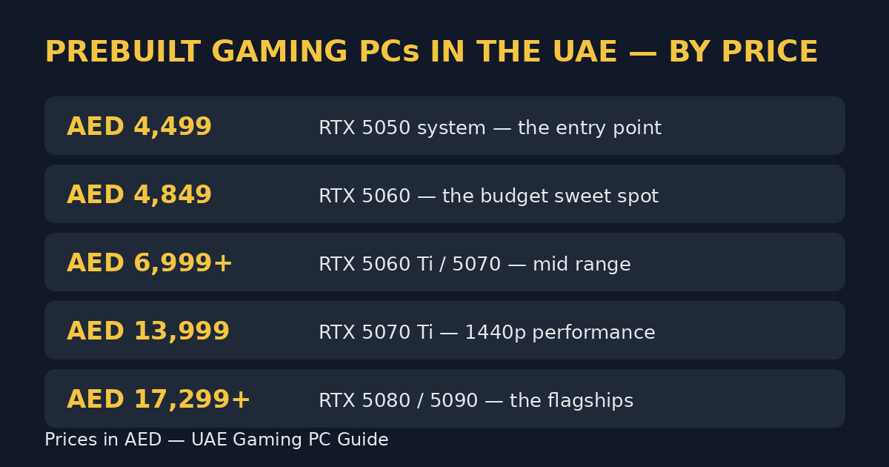

Not everyone wants to spend a weekend with a screwdriver, a parts list and a thermal paste tutorial. For plenty of UAE gamers the right PC is the one that arrives built, tested and ready to play the same evening. The question is what "ready-made" actually costs here — and what you should check before the money moves. This guide prices the prebuilt ladder in dirhams, tier by tier, with the honest checks that separate a good buy from a glossy mistake.

The range starts lower than most people expect. An entry RTX 5050 system sits at AED 4,499, and the budget RTX 5060 builds at AED 4,849 are the volume sellers — proper 1080p machines with warranty, not office PCs in a gaming costume. The middle is crowded: AED 6,999–8,999 buys RTX 5060 and 5060 Ti systems that handle high-refresh 1080p and entry 1440p, and AED 9,349–13,999 is RTX 5070 and 5070 Ti territory. At the top, complete RTX 5080 systems run AED 17,299–17,999, and the RTX 5090 flagship tops the range at AED 44,999.
| Tier | Typical spec | UAE price (AED) | Best for |
|---|---|---|---|
| Entry | RTX 5050, 16GB RAM, 1TB SSD | From 4,499 | 1080p gaming, first PC |
| Budget sweet spot | RTX 5060 | From 4,849 | High-refresh 1080p |
| Mid range | RTX 5060 Ti / 5070 | 6,999 – 9,999 | 1440p, streaming |
| Performance | RTX 5070 Ti | Up to 13,999 | 1440p high-refresh |
| Flagship | RTX 5080 / 5090 | 17,299 – 44,999 | 4K, no compromises |
Price the parts separately and a prebuilt sometimes looks a few hundred dirhams heavier — until you count what the sticker includes: assembly, stress-testing, cable management, a single warranty covering the whole machine instead of eight separate ones, and 0% installment plans that spread the cost. At Anigma the same live-price builder used for custom machines shows exactly what each part costs, which makes the comparison honest: spec a custom build, note the total, then compare it against the ready-made equivalent before deciding. When the gap is small, the warranty and the saved weekend usually settle it.
First, the power supply: insist on a named, quality unit with wattage headroom — it is the part cheap builds hide. Second, cooling: UAE summers punish sealed cases, so look for real airflow and more than one fan. Third, RAM and storage in writing — 16GB and 1TB is the sensible floor for a new machine. Fourth, the warranty terms: one year on the full system is the local standard worth expecting. Fifth, upgrade room: a standard motherboard and case today means a graphics card swap in three years instead of a whole new PC.
A ready-made PC still needs the two things you touch every session. Our companion chair and monitor finishing guide covers how to pair the right gaming chair and screen with a new system in Dubai, priced the same honest way in dirhams.
Ready-made is not the lazy option; priced properly, it is the efficient one. Know the ladder — AED 4,499 at the door, the sweet spot under AED 10,000, flagships from AED 17,299 — run the five checks, and the PC that arrives will be the PC the listing promised.